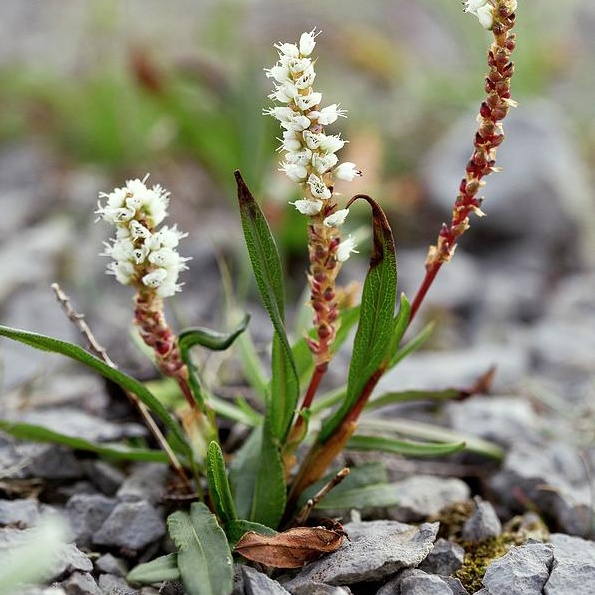

Bistorta vivipara
Common name
Alpine Bistort
Deutscher Name
Knöllchen-Knöterich (knotweed)
Family
Polygonaceae
Family common name
Buckwheat family
Blooms
L May - E September
Habitat
Meadows, pasture, fens. Nutrient-poor soils to 3000 m. (9000 ft.).
Range Map